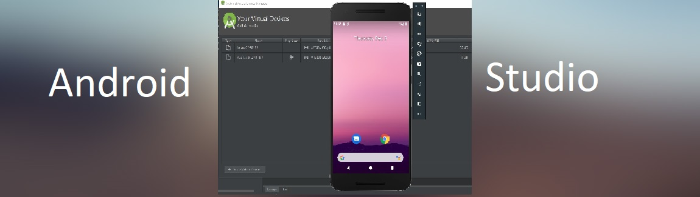
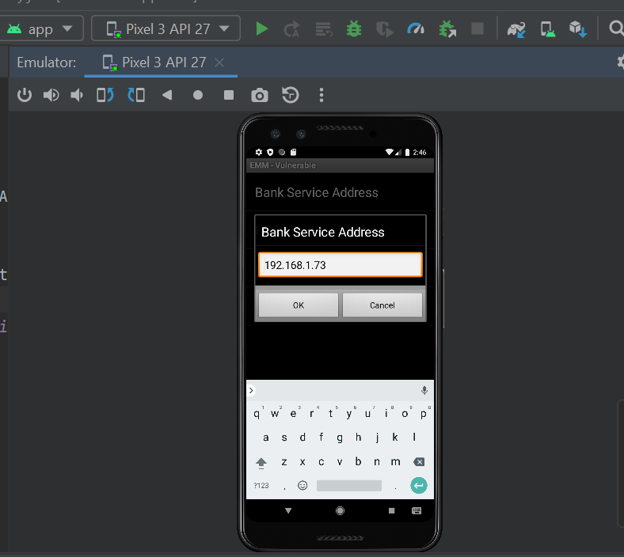

Activity 5
Estimated Time: 15 Minutes
↠1.1 Objective
- In this Activity 5, the installed app from previous activity is modified to connect with Python web server running on local computer and login credentials are monitored on Logcat window.
↠1.2 Description
In this Activity, we will modify settings inside app to connect with python web server setup on local system and monitor the logs using "Logcat" on Android Studio.
↠1.3 Instructions
- Step 1: Leave the python web server running on port 8080. Do not disturb the server.
- Step 2: Open new command prompt window and check your system ip address with command "ipconfig". Make a note of IPv4 address in the ipconfig command output.
- Step 3: Now go to android studio -> AVD (Android Virtual Device) -> Run Device in emulator -> Open app (which is installed through login.apk file)
- Step 4: Inside the app, at the lower right corner, click the three-dot icon.
- Step 5: Click Reset, Click the three-dot icon again.
- Step 6: Click "Preferences" -> Click "Bank Service Address" -> Put your system ip address identified from Step2 here.
- Step 7: Similarly go to "Preferences" page again -> Click "HTTP Port" -> Set port as 8080
- Step 8: Now go to app login page (start page) and enter credentials. Default account credentials are provided on the same login page.
- Step 9: When you enter credentials and click "Login" button, you can see logs in "Logcat" window.
- Step 10: Take a screenshot of logs in "Logcat" window showing the credentials in plaintext format. Please send the screenshot to Professor through mail for submission.


↠1.4★ ★ ★ Self-Assessment ★ ★ ★
Please complete the following self-assessment over Activity 5
Start Assessment↠1.5 Activity 5 - Feedback üòçüòÅüò∂üôÅüòû
Please complete the following survey questions over Activity 5
Start Survey Questions